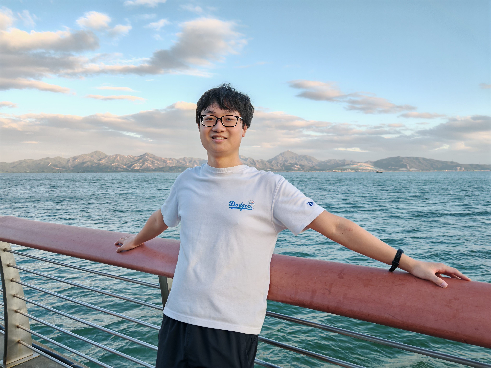
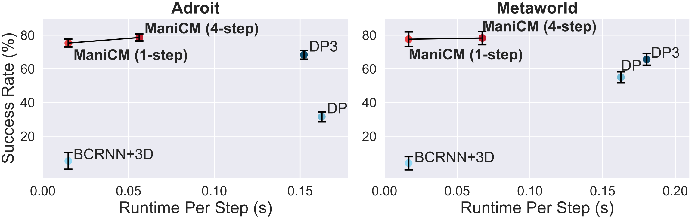
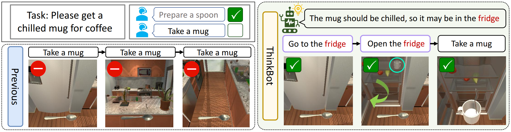

|
Can be pronounced as "Kuanhsing Lu". Hello! I am a 1st year master at Tsinghua University Shenzhen International Graduate School, supervised by Prof. Yansong Tang in IVG@SZ group. I received my bachelor's degree in Chien-Shiung Wu College from Southeast University, where I was a member of PALM lab and advised by Prof. Yuheng Jia and Prof. Junhui Hou. |
 |
{kind=link}
|
My research passion is on "building end-to-end general agent for navigation and manipulation" . |
|  |
Guanxing Lu*, Zifeng Gao*, Tianxing Chen, Wenxun Dai, Ziwei Wang, and Yansong Tang. Preprint [project page] / [arxiv] / [code] We propose a real-time point cloud-conditioned diffusion model named ManiCM for robotic manipulation that imposes the consistency constraint to the diffusion process, so that the model can generate robot actions in only one-step inference. |

|
Guanxing Lu, Shiyi Zhang, Ziwei Wang, Changliu Liu, Jiwen Lu and Yansong Tang. Preprint [project page] / [arxiv] / [code] We propose a dynamic Gaussian Splatting method named ManiGaussian for multi-task robotic manipulation, which mines scene dynamics via future scene reconstruction. |
|  |
Guanxing Lu, Ziwei Wang, Changliu Liu, Jiwen Lu and Yansong Tang. Preprint [project page] / [arxiv] In this paper, we have presented a ThinkBot agent that reasons the thought chain for missing instruction recovery in embodied instruction following (EIF) tasks. |

|
Yuheng Jia, Guanxing Lu, Hui Liu and Junhui Hou. IEEE TCSVT 2023 [arxiv] / [code] We proposed a novel semi-supervised subspace clustering method, which can simultaneously augment the initial supervisory information and construct a discriminative affinity matrix by leveraging their identical global low-rank structure. |
|
|
Thanks to Jon Barron, ClustrMaps and 鸦居. |
© 2022-2024 Guanxing Lu. Last updated: June. 5, 2024.
斗罢艰险又出发。